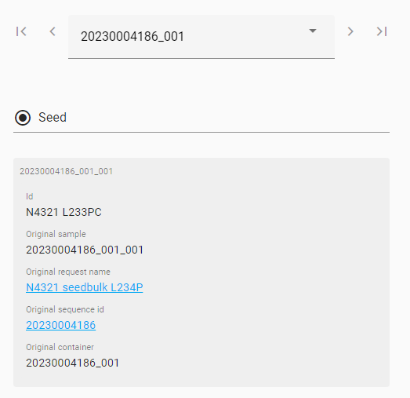

Sample container layout screens
Setup screen
The setup screen allows you to select a source type.
Observation unit select screen
The observation unit select screen allows you to select the observation units you want to add to your setup.
- A
- Filter the observation unit list.
- B
- Switch between the selected books or worklists.
- C
- Refresh the selected books or worklists.
- D
- Mark the checked
 observation unit for sampling.
observation unit for sampling. - E
- Unmark the checked observation unit for sampling.
- F
- Browse the observation unit list.
- G
- Change the items per page of the observation unit list.
- H
- Swap the navigation pane to the top of the table.
- I
- Customize the observation unit list by checking the boxes of the fields you want to show.
Observation unit order screen
The observation unit order screen is an optional step in which you can order your observation unit before adding them to your setup.
- A
- Switch between the selected books or worklists.
- B
- Refresh the selected books or worklists.
- C
- Order observation unit:
- Order the observation units ascending or descending based on specific columns
- Move observation units to the beginning of the list
- Move observation units to a specific position in the list
- Move observation units to the end of the list
- Remove observation units from the list
- D
- Browse the observation unit list.
- E
- Change the items per page of the observation unit list.
- F
- Swap the navigation pane to the top of the table.
- G
- Customize the observation unit list by checking the boxes of the fields you want to show.
Container layout screen
The sample container layout screen helps you define the actual setup of the sample container.
- A
- Customize the observation unit list by checking the boxes of the fields you want to show.
- B
- Export the sample container layout data for offline use:
- Export container layouts: Download the sample container layout as a PDF
- Export observation unit list: Download the observation unit list parameters as a csv file
- Export labels: Download sample container names as a csv file
- Print labels: Select a printer and print the sample container names
- C
- Finalize the sample container setup (Mark complete).
- D
- Change the view:
- List view of the contents of the sample container
- Container view of the contents of the sample container
- Expanded view of the contents of the sample container
- E
- View more options for the sample container positions:
- Start scanning: Scan each plant before you sample it, so you can build the layout of the sample container in real-time.
- Clear positions: Clear the selected positions
- Clear and move subsequent positions: Clear the selected positions and move the subsequent positions forward to remove empty wells
- Insert empty positions: Insert specified number of empty positions as from selected position
- F
- Browse the sample containers or change the number of sample containers:
- : Add a sample container
- : Remove a sample container
- G
- Add observation units to the sample container:
- Add all observation units in the order defined in the previous step
- Add the selected observation units to the selected well
- Add the selected observation units to the first empty wells starting from the selected well
- Add the selected observation units to the first empty wells after the last filled well
- Add the selected observation units to the first empty wells after the last filled well for a specific number of times
- H
- Browse the observation unit list.
- I
- Change the items per page of the observation unit list.
- J
- Swap the navigation pane to the top of the table.
Notice: A new sample container will automatically receive a unique name: "request #"_"container #".
Important: For seeds, the 'one position container' has a slightly different appearance with only two ways of filling the container:

- Add selected observation units to one position container.
- Assign selected observation units after last filled one position container.
- Assign selected observation units multiple times after last filled position.